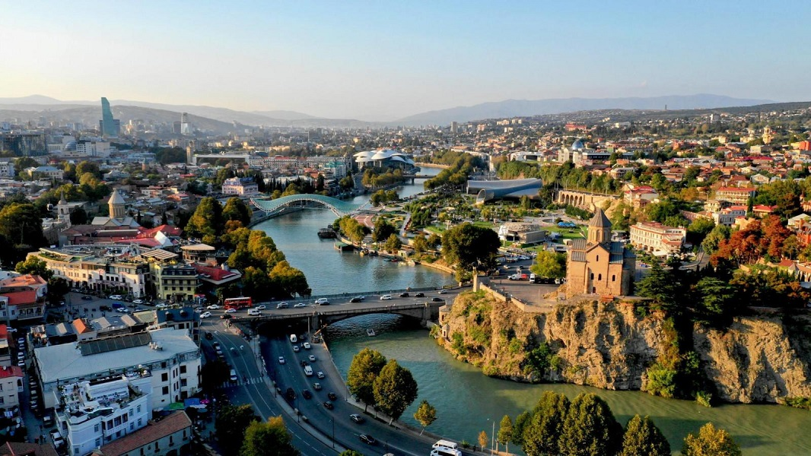
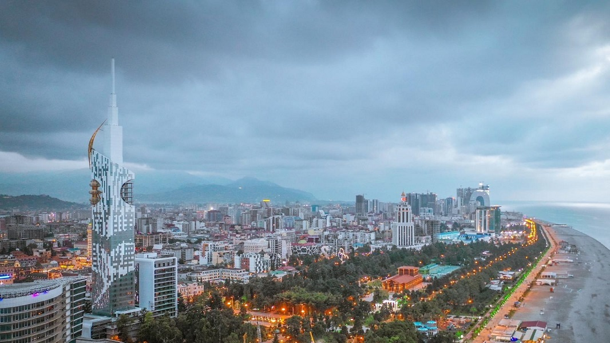
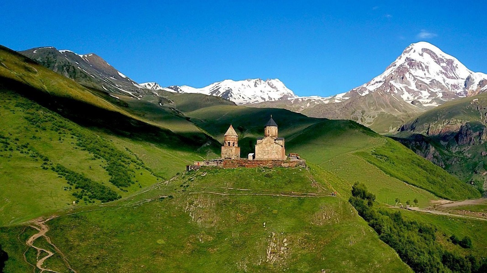

Tbilisi
Tbilisi - With its dramatic valley setting, picturesque Old Town, eclectic architecture and superb eating and drinking opportunities, Tbilisi is the vibrant, beating heart of Georgia.
Duration: 2 Days
Price: 90 $
Batumi
Batumi - With a backdrop of mist-wrapped hills and soaring snow-capped peaks, Georgia’s second city is a charismatic place with a charming Old Town and a fantastic subtropical climate, fronted by the calm waters of the Black Sea.
Duration: 2 Days
Price: 90 $
Kutaisi

Kutaisi - Once the capital of Georgian kingdom, today is something of a charming backwater. This lovely town, makes a great base for exploring the region of Imereti and has a smattering of worthwhile sights and restaurants to enjoy itself.
Duration: 2 Days
Price: 90 $
Mtskheta

Mtskheta - It has been Georgia’s spiritual heart since Christianity was established here in about 327, and holds a near-mystical significance in Georgian culture. It had been capital of most of eastern Georgia from about the 3rd century BC to the 5th century AD.
Duration: 1 Day
Price: 40 $
Stepantsminda
Stepantsminda - This is most people’s destination on the Georgian Military Hwy: a valley town with the famous hilltop silhouette of Tsminda Sameba Church and the towering snowy cone of Mt Kazbek looking down from the west.
Duration: 1 Day
Price: 50 $
Mestia

Mestia - The 'capital' of Upper Svaneti, Mestia is a sprawling conglomeration of at least 10 hamlets, dotted with picturesque Svan towers.
Duration: 2 Days
Price: 120 $
Vardzia

Vardzia - The remarkable cave city is both a cultural symbol and a spectacular natural phenomenon with a special place in Georgian hearts.
Duration: 1 Day
Price: 60 $
Uplistsikhe

Uplistsikhe - This once enormous cave city sits 10km east of Gori above the north side of the Mtkvari River. Between the 6th century BC and 1st century AD, Uplistsikhe developed into one of the chief political and religious centres of pre-Christian Kartli.
Duration: 1 Day
Price: 50 $